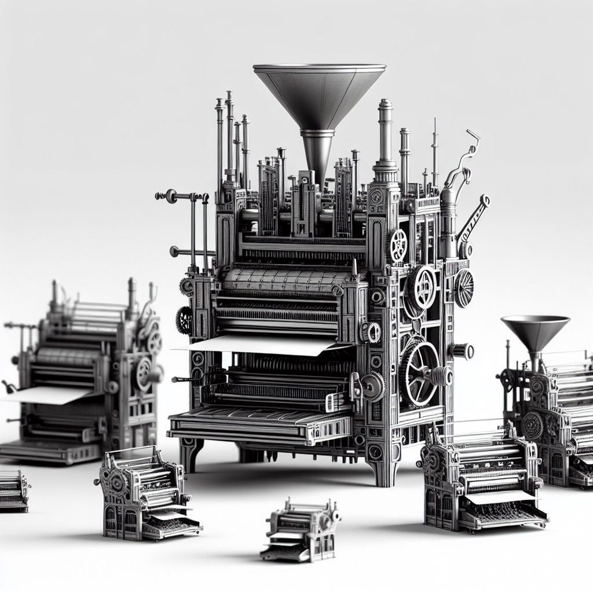

4D tanterem
Bemutatkozás
Örömmel jelentjük be, hogy iskolánk megnyitotta a világ első 4D-s tantermét a látogatók előtt. Ez egy nagyon különleges terem, ugyanis 4D-s. Ez nem csak annyit jelent, hogy a tanterem mind a négy falán található egy nagy D betű papírból odaragasztva, hanem a legmodernebb eszközökkel szereltük fel. Látogasson el ön is egy jelképes összegért 1 cserébe, és nézze meg ezen egyedülálló helyszínt. Ilyet máshol nem láthat!
1 150000 Ft / óra
Előnyök
- A tanteremben az ország legmodernebb eszközeit próbálhatja ki.
- A tanteremben vannak ablakok, így a szellőztetés könnyedén megoldható.
- A tanterem rendelkezik világítással, így nem kell aggódnia a sötétség miatt. Kivéve áramszünet esetén.
- A tanterem hétvégén zárva tart, így nincs benne nagy tömeg.
Eszközök
A tantermünkben számos különleges eszköz használatát tesszük lehetővé, egészen konkrétan kettőt.
| Eszköz | Kép | Leírás |
|---|---|---|
| Személyi számítógép | A személyi számítógép régi - már nem használt - személyi igazolványokból készült számítógép. Számítókapacitása rendkívül... majd meglátja. Nagyon szépen néz ki, bátran nézegesse. | |
| Nyomtató nyomtató nyomtató |  | A nyomtató nyomtató nyomtatóval bármikor kinyomtathat egy nyomtatót, ha erre lenne szüksége. Egyelőre a technológia még csak hagyományos nyomtatók nyomtatását teszi lehetővé, a nyomtató nyomtató nyomtató nyomtató nyomtatóra egyelőre még várni kell. |
Hogyan látogathatja meg?
- Email-ben (info@4dterem.hu) küldje el az ön és a teljes családja életrajzát.
- Vásároljon egy legfeljebb 1.5m magasságú autót, amellyel be tud hajtani udvarunkba.
- Jöjjön el hozzánk, hajtson be az udvarra, majd mássza végig négykézláb a 1.5 km hosszú katakombákat, amely a teremhez vezet.
- Fizesse be a jelképes belépési díjat az ajtónál található automata segítségével.